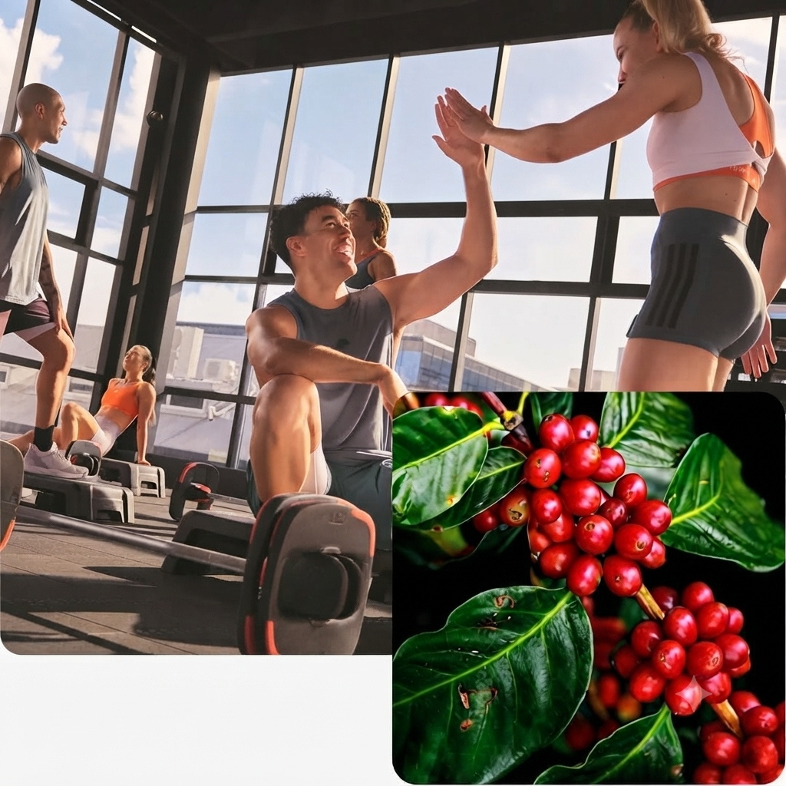
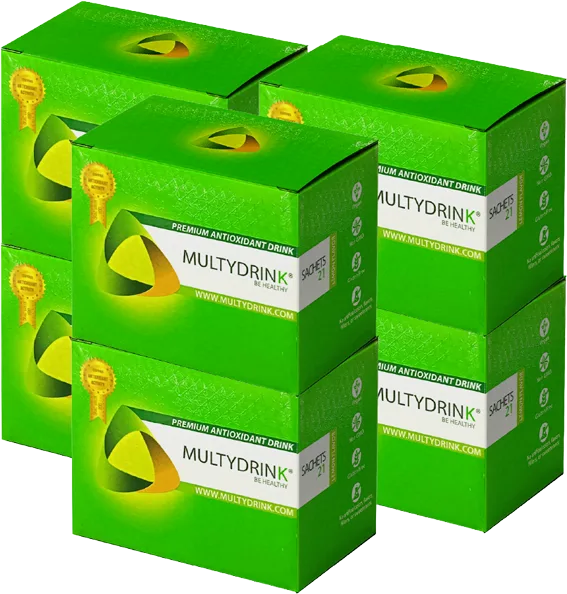

Tu bienestar, tu evolución, tu momento es ahora.
Productos naturales, conocimiento real y oportunidades para transformar tu vida desde adentro hacia afuera.

Más que productos,
un movimiento consciente.
Transformar tu bienestar es transformar tu vida... y el mundo que te rodea. Un ecosistema para impulsar cambios reales en tu evolución personal y económica.

Vitalidad física
100% natural, sin químicos artificiales, conservantes ni azúcar añadida.
Claridad Mental
Fórmula respaldada por investigación científica para nutrir cuerpo y cerebro de forma equilibrada.
Crecimiento económico
Construye estabilidad y libertad a través de nuestro modelo integral.
Beneficios que Transforman
Recupera tu vitalidad con el poder combinado de la naturaleza.
Energía Natural
Activa tu metabolismo y mantén tu vitalidad durante todo el día sin estimulantes artificiales.
Sistema Inmune Fuerte
Fortalece tus defensas naturales con Ganoderma Lucidum y componentes bioactivos.
Función Cognitiva
Mejora la concentración, memoria y claridad mental gracias a las teaflavinas del Té Negro.
Salud Cardiovascular
El ácido clorogónico del mucílago de café promueve la salud de tu corazón y circulación.
Digestión óptima
La inulina prebiótica de la Miel de Agave alimenta tu flora intestinal y mejora la digestión.
Anti-Envejecimiento
Los polifenoles del Extracto de Uva activan genes de longevidad y protegen tu ADN.
¡Llegó el momento de crecer en grande sin caminar solo!
En Multydrink te unes a un equipo de empresarios decidido a apoyarte en cada paso de tu crecimiento. Olvídate de la incertidumbre: caminamos contigo y te equipamos con tecnología de automatización para que tu negocio fluya con total facilidad:
Tus Aliados de Crecimiento
Publicador de Facebook, Calentador de WhatsApp y Extractores de datos (libres para ti por 2 meses).
Tu Equipo Digital 24/7
Tarjeta Digital y Chatbots Multivendedor para automatizar tus respuestas.
Además, te enseñamos a crear tus propias piezas gráficas, videos de alto impacto y te capacitamos semanalmente para dominar las redes sociales con total confianza.
Escríbenos ahora para conocer cómo unirte a nuestro equipo, activar estas herramientas y recibir todo nuestro soporte de marketing. ¡Tu comunidad te espera con los brazos abiertos!